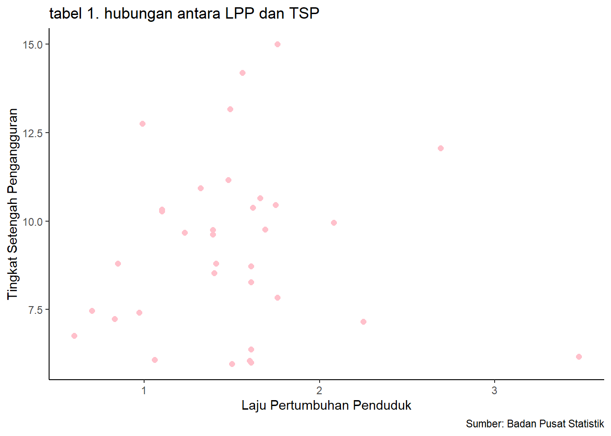

library(tidyverse)
library(readxl)Pengaruh Laju Pertumbuhan Penduduk terhadap Tingkat Setengah Pengangguran di Indonesia pada tahun 2021
Metode Penelitian Politeknik APP Jakarta

1 Pendahuluan
1.1 Latar belakang
Laju pertumbuhan penduduk di Indonesia terus melambat dari tahun ke tahun. Walaupun dengan waktu yang tidak sedikit, namun menurut perhitungan Badan Pusat Statistik, pada tahun 2018 besarnya laju pertumbuhan penduduk sebesar 1,33 persen hingga mencapai 1,25 persen di tahun 2020. Dengan perubahan angka laju pertumbuhan penduduk di Indonesia, mungkin akan berpengaruh kepada kesempatan kerja di Indonesia. Sehingga dalam penelitian ini penulis akan membahas pengaruh dari laju pertumbuhan penduduk terhadap tingkat setengah pengangguran di Indonesia pada tahun 2021.
1.2 Ruang lingkup
Ruang lingkup penelitian ini terdapat 2 variabel yaitu laju pertumbuhan penduduk di Indonesia dan tingkat setengah pengangguran di Indonesia. Dalam penelitian ini penulis mengambil objek penelitian dari Badan Pusat Statistik.
1.3 Rumusan masalah
Masalah pokok yang akan dibahas dalam penelitian ini adalah Apakah laju pertumbuhan penduduk berpengaruh terhadap tingkat setengah pengangguran di Indonesia?
1.4 Tujuan dan manfaat penelitian
Tujuan dari penelitian ini adalah untuk mengetahui adakah pengaruh laju pertumbuhan penduduk terhadap tingkat setengah pengangguran di Indonesia pada tahun 2021. Dan penelitian ini bermanfaat untuk memberikan wawasan seputar kependudukan dan ketenagakerjaan.
1.5 Package
Packages yang digunakan antara lain sebagai berikut:
2 Studi pustaka
Pekerja setengah pengangguran
Pekerja setengah pengangguran adalah mereka yang bekerja di bawah jam kerja normal (kurang dari 35 jam seminggu) dan masih mencari pekerjaan atau masih bersedia menerima pekerjaan (dahulu disebut setengah pengangguran terpaksa) (Badan Pusat Statistik, 2023).
Laju pertumbuhan penduduk
Laju pertumbuhan penduduk per tahun adalah angka yang menunjukkan rata-rata tingkat pertambahan penduduk per tahun dalam jangka waktu tertentu (Badan Pusat Statistik, 2022).
Teori Kependudukan (Karl Marx & Friedrich Engels)
Marxist berpendapat bahwa tekanan penduduk di suatu negara bukanlah tekanan terhadap bahan makanan, tetapi tekanan terhadap kesempatan kerja. Aliran ini juga berpendapat bahwa semakin banyak jumlah manusia atau penduduk maka semakin tinggi produk yang dihasilkan. Sehingga pembatasan penduduk tidak diperlukan.
3 Metode penelitian
3.1 Data
Dibawah ini adalah data yang digunakan sebagai objek penelitian, yang merupakan data laju pertumbuhan penduduk (LPP) dan tingkat setengah pengangguran (TSP) di Indonesia pada tahun 2021 dalam bentuk persen (%).
| Provinsi | LPP (X) | TSP (Y) |
|---|---|---|
| Aceh | 1,49 | 13,16 |
| Sumatera Utara | 1,23 | 9,67 |
| Sumatera Barat | 1,1 | 10,28 |
| Riau | 2,08 | 9,95 |
| Jambi | 1,39 | 9,75 |
| Sumatera Selatan | 1,32 | 10,93 |
| Bengkulu | 1,48 | 11,16 |
| Lampung | 1,1 | 10,33 |
| Kepulauan Bangka Belitung | 1,6 | 6,05 |
| Kepulauan Riau | 3,48 | 6,17 |
| DKI Jakarta | 0,6 | 6,76 |
| Jawa Barat | 1,41 | 8,8 |
| Jawa Tengah | 0,83 | 7,23 |
| DI Yogyakarta | 1,61 | 6,37 |
| Jawa Timur | 0,7 | 7,47 |
| Banten | 1,76 | 7,84 |
| Bali | 1,4 | 8,53 |
| Nusa Tenggara Barat | 1,76 | 15 |
| Nusa Tenggara Timur | 1,56 | 14,19 |
| Kalimantan Barat | 1,39 | 9,62 |
| Kalimantan Tengah | 1,61 | 6,01 |
| Kalimantan Selatan | 1,61 | 8,28 |
| Kalimantan Timur | 1,5 | 5,97 |
| Kalimantan Utara | 2,25 | 7,16 |
| Sulawesi Utara | 0,85 | 8,8 |
| Sulawesi Tengah | 1,62 | 10,38 |
| Sulawesi Selatan | 0,97 | 7,42 |
| Sulawesi Tenggara | 1,75 | 10,45 |
| Gorontalo | 1,06 | 6,08 |
| Sulawesi Barat | 1,66 | 10,65 |
| Maluku | 0,99 | 12,75 |
| Maluku Utara | 1,69 | 9,76 |
| Papua Barat | 2,69 | 12,06 |
| Papua | 1,61 | 8,72 |
Baca data
#import dataset
library(readxl)
dat<-read_excel('DAT LPP TSP.xlsx')
head(dat)# A tibble: 6 × 3
Provinsi LPP TSP
<chr> <dbl> <dbl>
1 Aceh 1.49 13.2
2 Sumatera Utara 1.23 9.67
3 Sumatera Barat 1.1 10.3
4 Riau 2.08 9.95
5 Jambi 1.39 9.75
6 Sumatera Selatan 1.32 10.9 library("ggplot2")
library("readxl")
ggplot(data=dat,aes(x=LPP,y=TSP)) +
geom_point(color="pink",size=2) + # setiap nambah command, selalu kasih tanda +
labs(title="tabel 1. hubungan antara LPP dan TSP",
x="Laju Pertumbuhan Penduduk",
y="Tingkat Setengah Pengangguran",
caption = "Sumber: Badan Pusat Statistik") +
theme_classic()
3.2 Metode analisis
Metode yang dipilih adalah regresi univariat atau Ordinary Least Square (OLS) dengan 1 variabel independen. Penelitian ini bermaksud mencari hubungan antara TSP dan LPP. Spesifikasi yang dilakukan adalah:
\[ y_{t}=\beta_0 + \beta_1 x_t+\mu_t \]
Di mana \(y_t\) adalah Tingkat Setengah Pengangguan (TSP) dan \(x_t\) adalah Laju Pertumbuhan Penduduk (LPP).
4 Pembahasan
4.1 Pembahasan masalah
Pada bagian ini dapat ditampilkan data dan visualisasi data yang telah dikumpulkan.
#import dataset
library(readxl)
dat<-read_excel('DAT LPP TSP.xlsx')
head(dat)# A tibble: 6 × 3
Provinsi LPP TSP
<chr> <dbl> <dbl>
1 Aceh 1.49 13.2
2 Sumatera Utara 1.23 9.67
3 Sumatera Barat 1.1 10.3
4 Riau 2.08 9.95
5 Jambi 1.39 9.75
6 Sumatera Selatan 1.32 10.9 4.2 Analisis masalah
Hasil regresinya adalah sebagai berikut:
reg1<-lm(TSP~LPP,data=dat)
summary(reg1)
Call:
lm(formula = TSP ~ LPP, data = dat)
Residuals:
Min 1Q Median 3Q Max
-3.3869 -1.8440 0.0461 1.1782 5.7295
Coefficients:
Estimate Std. Error t value Pr(>|t|)
(Intercept) 8.9775 1.2333 7.279 2.84e-08 ***
LPP 0.1665 0.7708 0.216 0.83
---
Signif. codes: 0 '***' 0.001 '**' 0.01 '*' 0.05 '.' 0.1 ' ' 1
Residual standard error: 2.449 on 32 degrees of freedom
Multiple R-squared: 0.001456, Adjusted R-squared: -0.02975
F-statistic: 0.04666 on 1 and 32 DF, p-value: 0.8304Hasil regresi di atas menunjukkan Pr(>|t|) = 0.83, dimana semakin kecil angkanya semakin bagus dan semakin mendekati 1 angkanya, maka tidak signifikan. Maka dikarenakan 0.83 mendekati 1, artinya antara laju pertumbuhan penduduk dan tingkat setengah pengangguran hasilnya tidak signifikan.
5 Kesimpulan
Berdasarkan hasil regresi di atas, dapat disimpulkan bahwa Laju Pertumbuhan Penduduk di Indonesia tidak berpengaruh terhadap Tingkat Setengah Pengangguran di Indonesia pada tahun 2021. Hal ini dapat terjadi dikarenakan angka laju pertumbuhan penduduk dari tahun ke tahun menurun, dan bisa saja laju pertumbuhan penduduk tidak mempengaruhi tingkat setengah pengangguran, melainkan variabel lain yaitu tingkat pengangguran. Serta memungkinkan jika tiap kenaikan laju pertumbuhan penduduk diikuti oleh peningkatan lapangan kerja.
6 Saran
Penelitian selanjutnya bisa menambahkan beberapa variabel yang mendukung dan relevan dengan variabel yang terkait serta menggunakan periode tahun yang lebih panjang untuk meningkatkan akurasi penelitian dan hasil yang lebih baik.
7 Referensi
Badan Pusat Statistik Indonesia. (25 Februari 2022). Penduduk, Laju Pertumbuhan Penduduk, Distribusi Persentase Penduduk, Kepadatan Penduduk, dan Rasio Jenis Kelamin Penduduk Menurut Provinsi, 2021. Diakses pada 11 Januari 2024, dari https://www.bps.go.id/id/statistics-table/3/V1ZSbFRUY3lTbFpEYTNsVWNGcDZjek53YkhsNFFUMDkjMw==/penduduk–laju-pertumbuhan-penduduk–distribusi-persentase-penduduk–kepadatan-penduduk–rasio-jenis-kelamin-penduduk-menurut-provinsi.html?year=2021
Badan Pusat Statistik Indonesia. (11 Januari 2023). Tingkat Setengah Pengangguran Menurut Provinsi. Diakses pada 11 Januari 2024, dari https://www.bps.go.id/id/statistics-table/2/MTE4MSMy/tingkat-setengah-pengangguran-menurut-provinsi.html
Pancasasti, R., & Khaerunisa, E. (2018). Analisis Dampak Laju Pertumbuhan Penduduk terhadap Aspek Kependudukan Berwawasan Gender pada Urban Area di Kota Serang. Tirtayasa Ekonomika, 13(1), 130.
Restiani, C. P., Rahma, S., & Desmawan, D. (2022). Analisis Pengaruh Tingkat Pengangguran dan Tingkat Pertumbuhan Penduduk Terhadap Tingkat Kemiskinan di Provinsi Jawa Barat. Jurnal Ekonomi, Bisnis dan Manajemen, 1(2), 163-172.